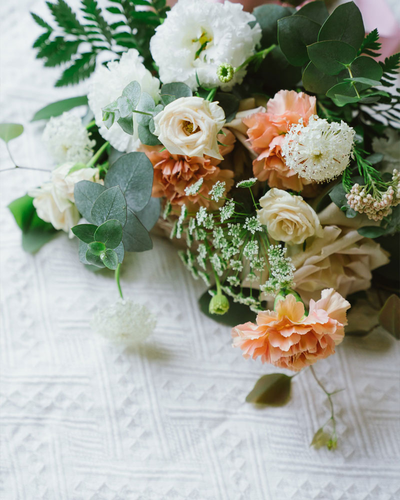
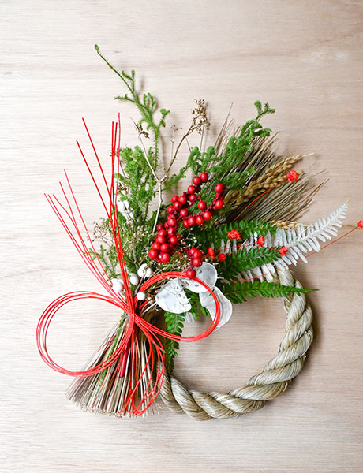
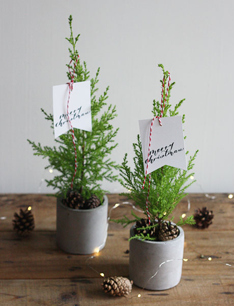
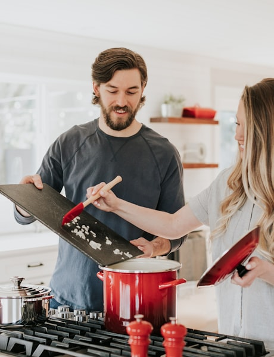
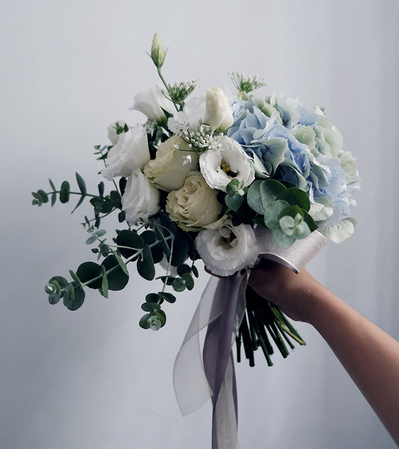
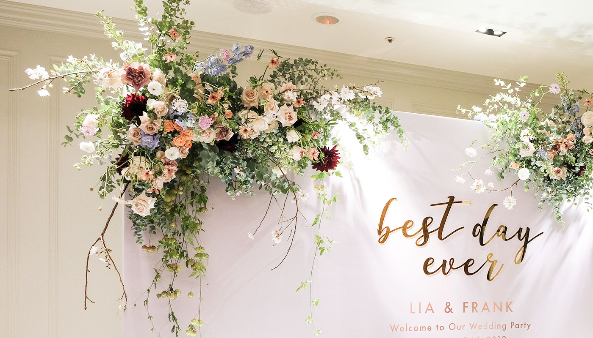

關於椛花
「椛花」寓意一花一木，蘊含著對花藝之美與風雅生活的喜愛。
我們將花藝與美感融入日常，隨著四季更迭，感受自然流轉的美好，讓花草為生活添上一抹詩意。在一花一木、一景一物之間，細細品味季節的風景，收藏那些觸動心靈的美好瞬間。
讓美，不只停留於眼前，更成為日常生活的一部分。
客製花禮
我們以設計陪伴日常，讓每一件作品，都成為生活中一份溫柔而長久的美好。
注連繩花禮
No. 02 — Ceramics No. 03 — Textiles
No. 03 — Textiles

No. 04 — Craft No. 05 — Bedroom
No. 05 — Bedroom
 No. 06 — Light
No. 06 — Light

零基礎永生花
花藝美學課
這堂課不需要任何插花經驗，從認識花材、花材特性與色彩搭配開始，循序漸進地引導你掌握永生花創作的基礎與實用技巧。 課程將透過不同形式的作品練習——從插花、花束、花圈，到玻璃罩作品，帶你認識不同的花藝技法與構圖方式，逐步培養自己的美感與創作能力。
- 適合對象
- 初學者 / 有花藝經驗者
- 課程內容
- 1.花藝的初體驗 2.浪漫的罩盅花禮 3.季節自然花圈設計 4.法式花盒設計 5.創意畫框設計 6.永生花壁掛創作
花藝服務
訂製流程
客製花禮的訂購步驟
Step 01
討論與溝通
透過線上溝通與我們討論您想客製的花禮形式，並告訴我們您喜歡的風格與色系。
Step 02
訂單付款
等候我們討論確認明細內容，於三日內付款，收到款項後，訂單即成立。
Step 03
設計完成
當作品完成後，我們會拍照回傳與您確認。
Step 04
商品寄送
商品運送可選擇我們親送
